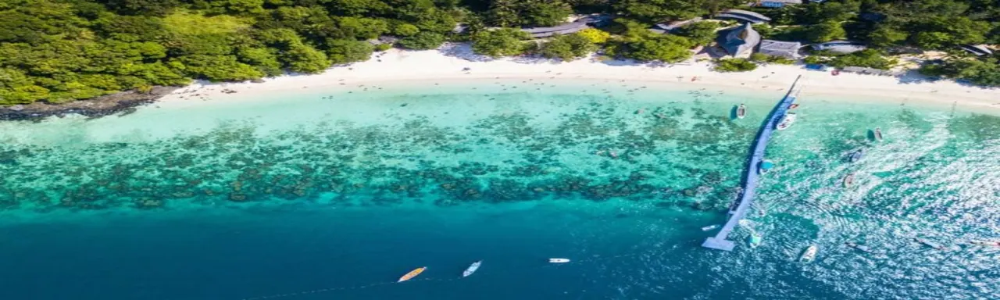

07:55 TPE 桃園10:40 BKK 曼谷
TG637 · 桃園第 1 航廈 · 飛行 3 小時 45 分鐘
THAILAND · 10—17 APRIL 2027
海風、潑水節，與八天的南洋假期。
這趟旅行
四個人，八天七夜。從 LOF LAND、火舞和潑水節，玩到格蘭島，再把最後兩天留給曼谷。
2027.04.10 — 04.17 · 芭達雅 → 曼谷

目前即時天氣，非旅遊日期預報。
TG637 · 桃園第 1 航廈 · 飛行 3 小時 45 分鐘
TG630 · 抵達高雄第 1 航廈 · 飛行 3 小時 30 分鐘
航班皆為當地時間；泰國比台灣慢 1 小時。
BKK → LOF LAND（停留兩小時）→ 海灘路民宿 → DAM 火舞 → 六巷。四人機場接送 1,300 THB＋LOF LAND 停留加價 500 THB，合計 1,800 THB；LOF LAND 四人門票 1,200 THB，各含一杯飲料。
回程 4/17 約 08:00 從 Yu Sabay 阿Ben的曼谷民宿出發，09:45 前抵達 BKK，預留起飛前兩小時辦理登機。
可以勾選，紀錄只保存在這台裝置。
尚未勾選
依現行規定，TDAC 需於抵達前三天內（含抵達日）提交，官方申請免費。先備好護照、航班與第一晚住宿地址。
TDAC 官方入口官方填寫說明現行資訊查核於 2026/10/30；2027 出發前再確認規定。
4/10 已有整段包車報價；其餘接送依各方案確認。先把海灘路民宿地址存進手機，節日期間預留叫車時間。
LOF LAND 位置室內逛街可改 Royal Garden Plaza 或 Terminal 21。跳傘、快艇與火舞則先聯絡業者，依天候及訂單規則調整。
旅遊警察 1155，警察緊急電話 191。先保存司機、民宿房東及活動業者的聯絡方式。
官方旅遊協助電話書籤是預約入口，不代表已購票。日期、套餐與費用仍以實際訂單為準。
4/10 已知費用：3,000 THB＋NT$1,933／四人；餐飲加點、晚間叫車另計。不同幣別分開記。
4/10 僅列已知泰銖費用每人 750 THB；4/11～4/14 暫留空，其他日期為粗估。不含機票、住宿與購物。